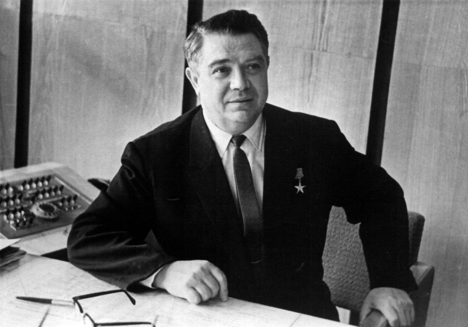
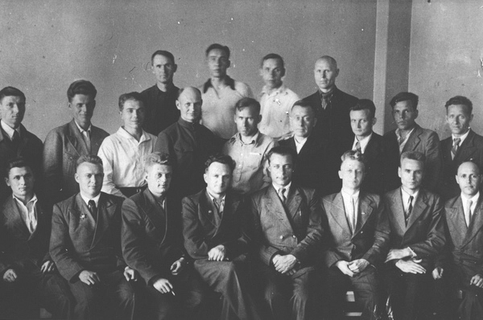
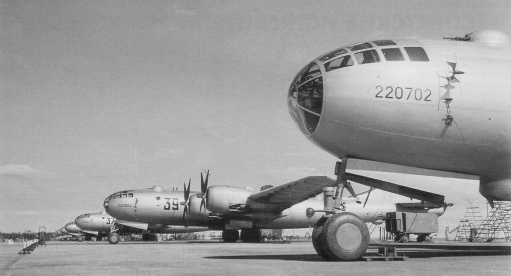
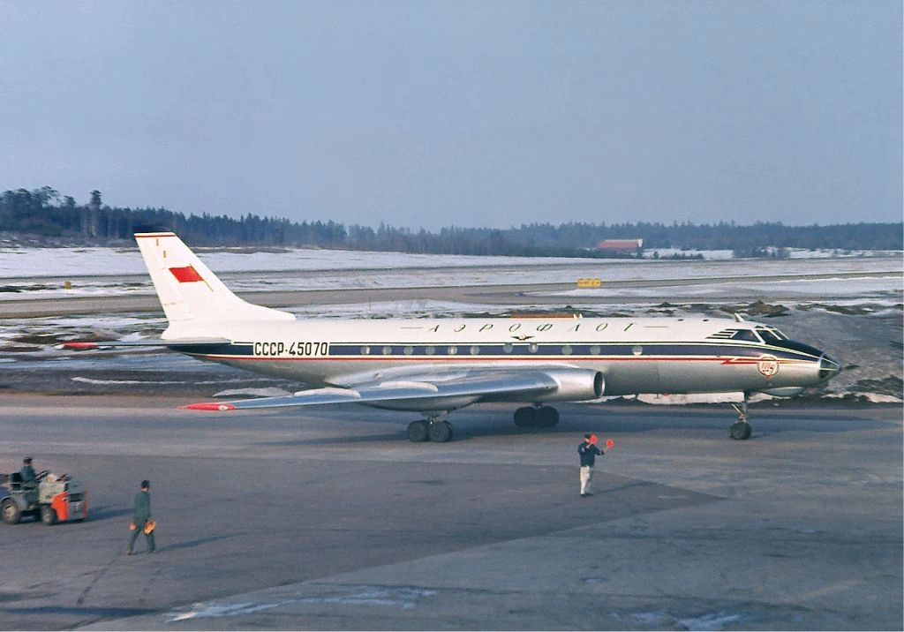
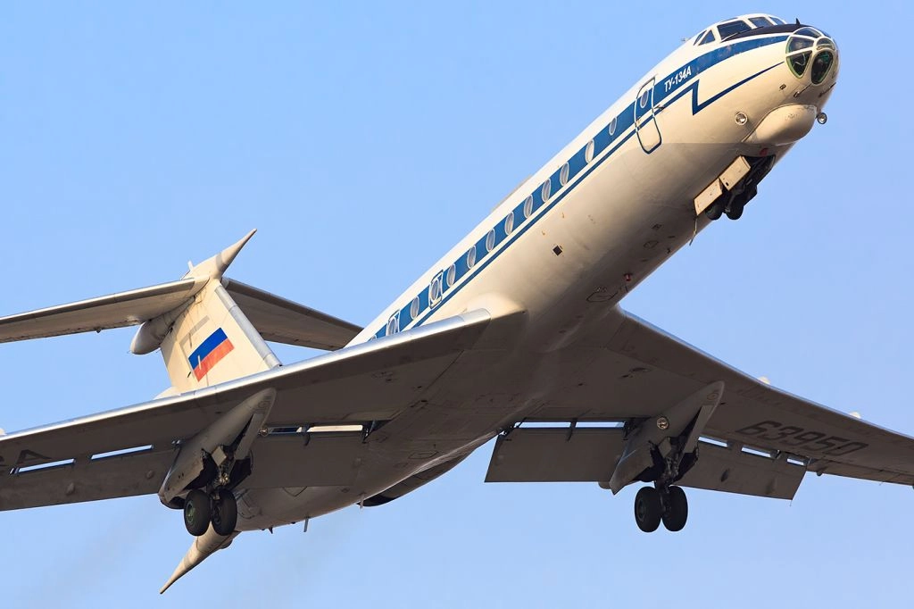
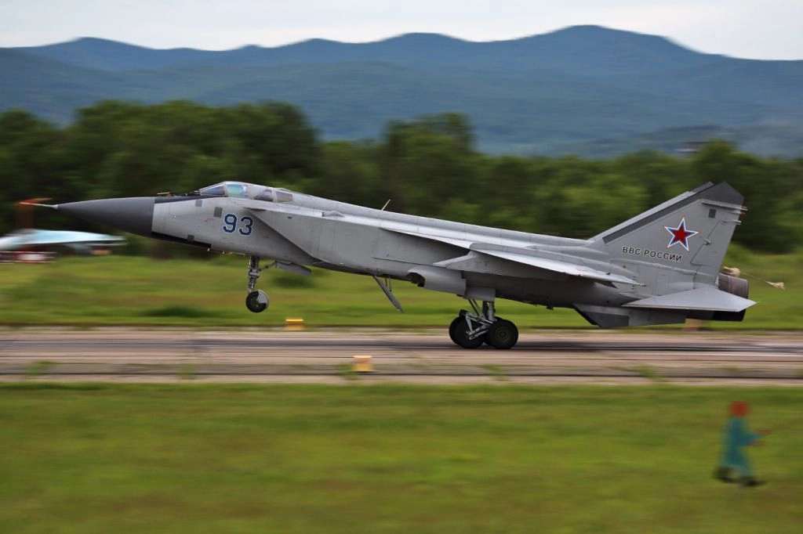
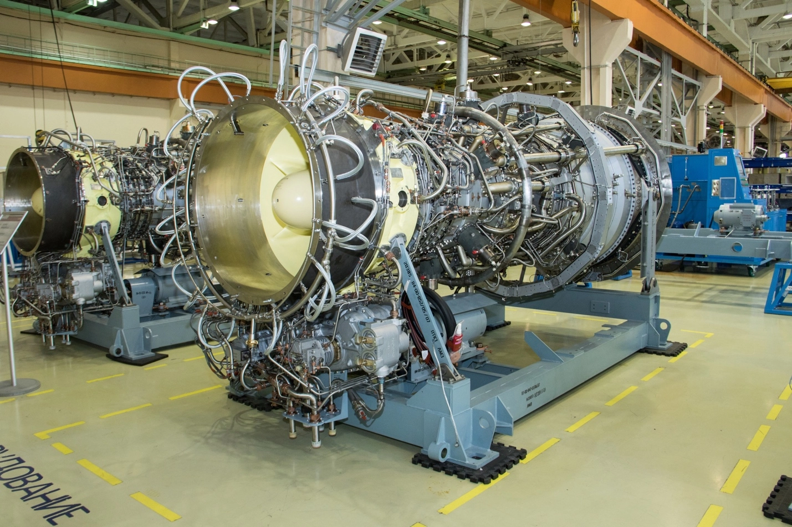

История создания двигателя серии ПС-90
Перед вами фотография при жизни создателя одного из самых массовых авиационных двигателей в Советском Союзе, которые применяются и по сегодняшний день, это Павел Александрович Соловьёв.
Краткая биография
Павел Александрович Соловьёв родился 26 июня 1917 года в деревне Алёкино (вошло в черту города Заволжска) Ивановской области в крестьянской семье. По данным метрической книги, опубликованным в 2017 году, П.А. Соловьёв родился в 1918 году. В 1934 году окончил 9 классов средней школы и поступил в Рыбинский авиационный институт. В апреле 1940 года поступил на работу в ОКБ-19 (сейчас – АО «ОДК-Авиадвигатель», Пермь). В 1948 году был назначен заместителем главного конструктора, в 1953 году – главным конструктором ОКБ-19, а в 1981 году – генеральным конструктором.
В 1960 году под руководством Соловьёва был разработан двигатель Д-20П для самолёта Ту-124, ставший первым в СССР двухконтурным турбореактивным двигателем. В последующие годы в КБ Соловьёва были разработан ряд двигателей для Ту-134, Ми-10, Ил-76, Ту-154, МиГ-31.
Его последней разработкой и пожалуй самой известной, стал двигатель Д-90, который в 1987 году получил в название ПС-90 в честь конструктора. Перед вами макет одной из модификации газотурбинной установки – ГТУ-16П, на базе авиационного двигателя ПС-90.
Соловьёв был профессором Пермского политехнического института и долгие годы совмещал работу в КБ с работой заведующего кафедрой авиадвигателей. Павел Александрович Соловьёв скончался в Перми 13 октября 1996 года.
От поршней к газотурбинам
При непосредственном участии Соловьева во время войны создается серия двухрядных авиамоторов АШ-82/83. Эти двигатели устанавливались на истребителях Ла‑5 и Ла‑7, штурмовиках Су-2, бомбардировщиках Ту-2, Пе-2 и Пе‑8, вклад которых в победу в Великой Отечественной войне сложно переоценить.
После войны ОКЦ завода №19 становится основным в СССР разработчиком поршневой техники для нужд военной и гражданской авиации. В 1947 году создается самый мощный серийный поршневой двигатель АШ-73ТК для дальнего четырехмоторного стратегического бомбардировщика Ту-4. Всего до 1953 года было выпущено 1200 бомбардировщиков различных модификаций, стоявших на вооружении ВВС до начала 1960-х годов. В конце 1940-х – начале 1950-х началось широкое внедрение поршневых двигателей ОКБ-19 в транспортную авиацию. Помимо установленных еще в начале войны моторов М-62ИР на самолетах Ли-2, начинается массовое использование двигателей ОКБ-19 на самолетах Ил-12, Ил-14, а также на вертолетах Ми-4 и Як-24. Двигатель АШ-62ИР, который ставился на «кукурузники» Ан-2, выпускался более 60 лет.
 Бомбардировщик Ту-4 с двигателями АШ-73ТКВ марте 1953 года уходит из жизни А.Д. Швецов, и Павел Соловьев становится главным конструктором. Эти события пришлись на переходный период в авиационном моторостроении: поршневая техника уже отживала свое, исчерпав возможности для роста, а газотурбинное направление было еще недостаточно развито. Соловьев, несмотря на свой молодой возраст, смог перенаправить работу бюро в новое русло разработки газотурбинной техники и вывести ОКБ на лидирующие позиции в стране и мире.
Период с 1953 по 1956 годы прошел под знаком поиска нужного типа и схем реактивных и газотурбинных двигателей. Важный выбор, определивший тематику ОКБ‑19 на многие годы, был сделан в середине 1955 года, когда коллектив начал проектировать первый двигатель по двухконтурной схеме Д‑20 для установки на бомбардировщике А.Н. Туполева, способном преодолевать зону ПВО на двухрежимном форсажном режиме работы двигателя. Были проведены испытания, однако в 1956 году работы над самолетом и, соответственно, над двигателем были остановлены. При этом двухконтурная схема двигателей и сегодня остается доминирующей во всем мире.
Период с 1956 по 1961 годы ознаменовался для коллектива Соловьева созданием и внедрением в эксплуатацию первого в СССР турбореактивого двухконтурного двигателя Д-20П для самолетов Ту-124. В историю Ту-124 вошел как первый реактивный пассажирский лайнер, принесший на региональные авиалинии комфорт и скорость. Другой важной разработкой тех лет стал первый в мире вертолетный газотурбинный двигатель Д‑25В для тяжелого вертолета Ми-6 и его модификаций Ми-10/10К. Ми-6 поставил 16 мировых рекордов по грузоподъемности и скорости полета, участвовал в боевых действиях в Афганистане. Создавались новые двигатели тоже рекордными темпами − с начала разработки Д-20П до запуска в серию прошло около трех лет, а вертолетная силовая установка была создана всего за 8 месяцев.
 Самолет Ту-124 с двигателем Д-20ПС 1963 по 1972 годы ОКБ-19 под руководством Соловьева, несмотря на сильную загруженность работой над ракетными двигателями, создает двухконтурные двигатели третьего поколения Д‑30 и Д‑30КУ/КП. Всего было выпущено более 3000 двигателей Д-30, которые устанавливались на пассажирский ближнемагистральный самолет Ту‑134, ставший самой массовой крылатой машиной в СССР. Силовая установка Д‑30КУ была создана для модернизации дальнемагистрального пассажирского самолета Ил-62, после которой он смог обеспечивать длительные беспосадочные перелеты по территории России, а также в Западное полушарие (США и Южную Америку) через Атлантический океан. Вариация установки Д‑30КП использовалась на военном транспортнике Ил-76 и его многочисленных модификациях, которые и по сей день применяются для доставки грузов МЧС и работы в зонах стихийных бедствий.
 Самолет Ту-134 с двигателями Д‑30Двигатели четвертого поколения: военные и гражданские
1970-е годы в работе Павла Александровича Соловьева и его КБ были в основном посвящены созданию военного двигателя Д‑30Ф6 для истребителя-перехватчика МиГ-31, первого боевого самолета четвертого поколения в СССР. Предварительные работы по созданию сверхзвуковой установки начались в ОКБ еще в середине 1960-х годов. В работе П.А. Соловьев руководствовался принципом сочетания новаторства и преемственности. В ходе создания двигателя Д-30Ф6 была проделана большая работа в кооперации со многими предприятиями авиационной отрасли СССР. Самолеты МиГ-31 до сих пор стоят на вооружении ВКС России. В 2009 году одному из самолетов МиГ-31 авиационного гарнизона «Сокол» было присвоено почетное имя «Павел Соловьев».
Если вернуться к гражданской авиации, то уже в 1970-е годы в Советском Союзе возникла потребность в обновлении магистрального авиапарка для улучшения топливной эффективности самолетов и приведения их в соответствие международным нормам. В конце 1982 года государство открыло конкурс на унифицированный двигатель для пассажирских самолетов нового поколения Ту-204 и Ил-96. Основными соперниками в конкурсе стали двигатели НК-64 ОКБ Н.Д. Кузнецова и Д-90А ОКБ П.А. Соловьева. Победу одержали пермяки: мотор Соловьева показал лучший расход топлива, меньший вес и более низкую себестоимость. В связи с 70-летием Павла Александровича в 1987 году двигателю было присвоено его имя − ПС‑90А.
При высокой конструктивной преемственности ПС‑90А с семейством двигателей Д‑30 Соловьевым был создан качественно новый продукт – высокоэкономичный и экологичный авиационный двигатель широкого применения, по своим характеристикам ставший в один ряд с лучшими мировыми двигателями аналогичного класса. Новый двигатель ПС‑90А впервые поднял в воздух самолет Ил-96 в 1988 году, а в 1989 году – самолет Ту-204.
В настоящее время двигатели семейства ПС-90А установлены на все современные отечественные пассажирские и грузовые самолеты. Двигатель в его различных модификациях выпускается до сих пор и является первым российским авиадвигателем с наработкой более 9000 часов без съема с крыла. ПС-90А поднимает в небо самолеты специального летного отряда «Россия», предназначенные для перевозки президента России и других государственных деятелей. На базе ПС-90А также разработано семейство турбореактивных двигателей ПС-90ГП для наземного использования в составе электрогенераторных и газоперекачивающих установок.
Из авиации в энергетическую промышленность
Когда перед конструкторским бюро встал вопрос обеспечения приводом газоперекачивающие агрегаты или энергоустановки было принято решение создать на базе имеющегося двигателя ПС-90А его конвертированную версию, которая сможет работать на природном газе. Эту установку назвали ГТУ-16П.
Пермские двигателестроители, в 1992 году открыв новое промышленное направление своего бизнеса, столкнулись с отечественными и западными конкурентами, поэтому рынок пришлось завоевывать. 12-мегаваттный первенец удался, и пермяки приступили к созданию машины в 16 МВт, несмотря на то что в эксплуатации на тот момент было много установок данного класса.
Конвертация авиационных двигателей ПС-90А и создание промышленного ПС-90ГП-2 доказали, что конструкторские решения «ОДК-Авиадвигатель» оказались лучшими и обеспечили пермским ГТУ необходимые эксплуатационные показатели: мощность на валу силовой турбины – 16 МВт; КПД – 37 %; частота вращения силовой турбины – 5300 об/мин.; ресурс до капремонта – 25 тысяч часов; назначенный ресурс – 100 тысяч часов.
Экологические характеристики тоже не подвели: сегодня есть возможность поставлять ГТУ с содержанием выбросов оксидов азота NOx не более 100 мг/нм3, окиси углерода СО – не более 50 мг/нм3.
Эти преимущества позволяют пермским ГТУ занимать лидирующее место в нише мощности 16 МВт.
Опытно-промышленная эксплуатация ГТУ-16П началась в ООО «Газпром трансгаз Чайковский». В январе 1995 года в цехе № 3 КС-18 «Ординская» успешно прошли приемочные межведомственные испытания опытного образца газоперекачивающего агрегата ГПА-16РП «Урал» (производство НПО «Искра») с ГТУ-16П разработки и изготовления «ОДК-Авиадвигатель». ГТУ-16П была установлена в одном цехе с пятью ГТУ-12П.
С 1995 года наработка ГТУ-16П КС «Ординская» превысила 55 тысяч часов. Количество заказов на новые установки увеличивалось с каждым годом. Установка ГТУ-16П в составе ГПА-Ц-16П стала востребована первыми зарубежными заказчиками. В 2006 году серийный завод «ОДК-ПМ» получил заказ на поставку трех ГТУ-16ПЕ для компрессорной станции «Сивас» (Турция).
В ООО «Газпром трансгаз Томск» на сегодняшний день эксплуатируется 16 газотурбинных установок на компрессорных станциях магистрального газопровода «Сила Сибири».